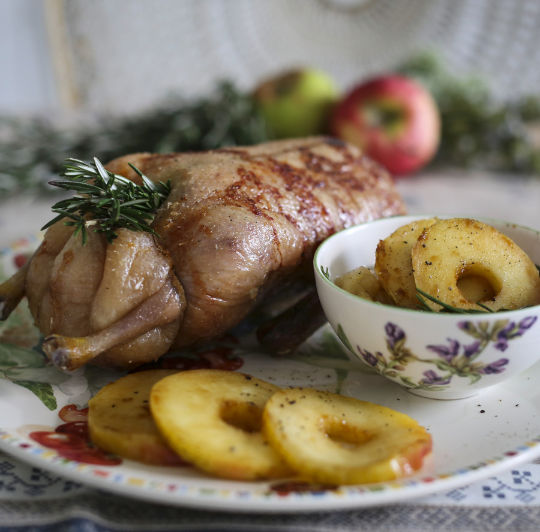
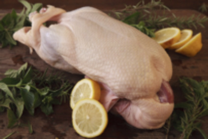
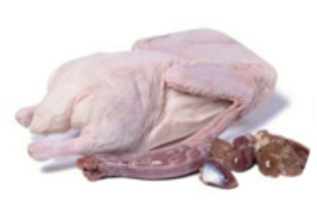
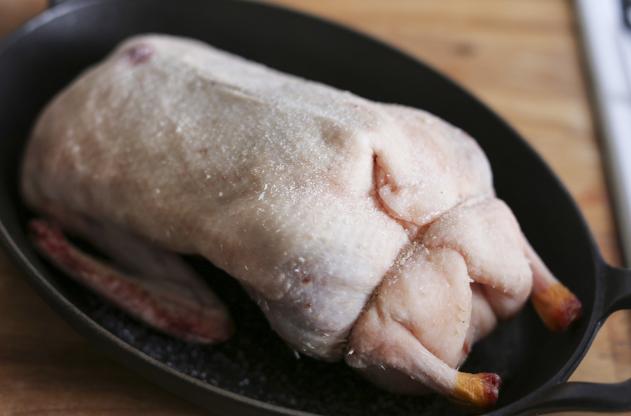
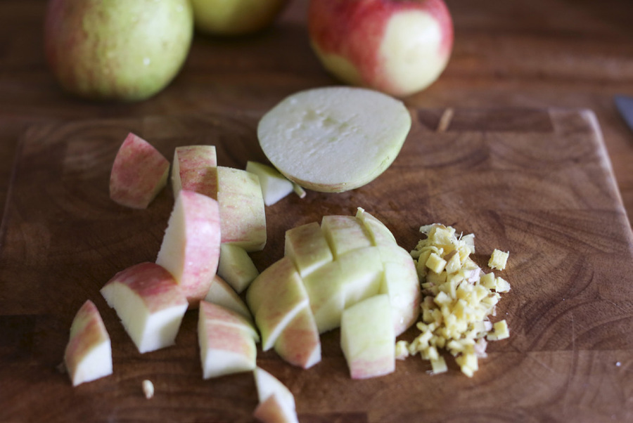
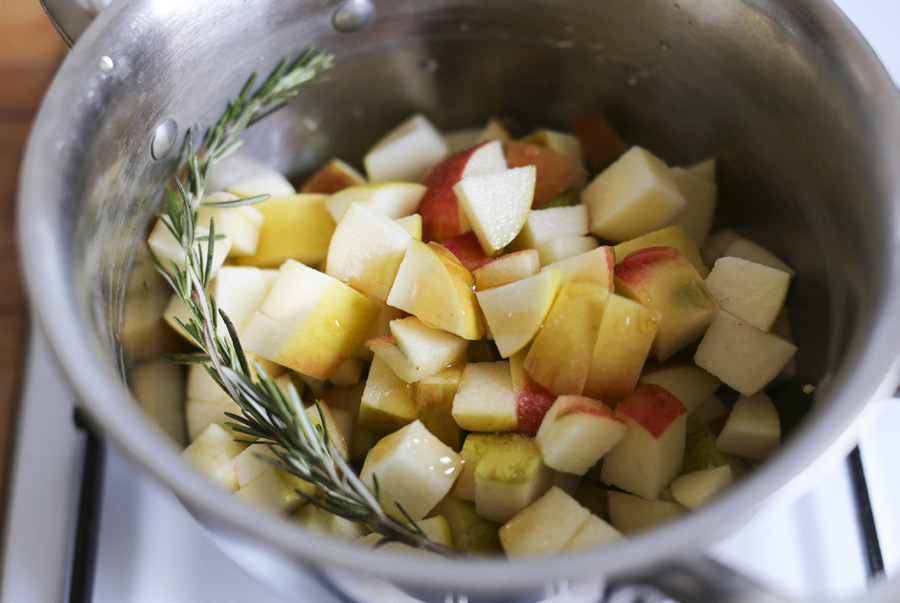
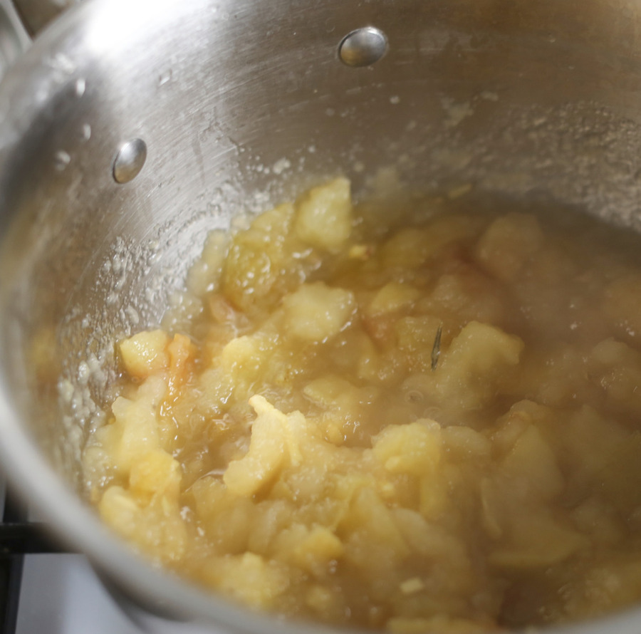

Утка сама по себе настолько вкусна, что я часто предпочитаю готовить ее а-ля натюрель. Яблоки, конечно же, классика. Но я предлагаю вам приготовить утку отдельно и яблоки отдельно, и устроить им встречу уже за праздничным столом. Розмарин прекрасно оттенит вкус яблок и придаст всему блюду новогодний флер.


Ответ прост: купить ее у фермера. Не в магазине. Особенно, если вы живете в России. У хорошей утки плотная крепкая кожа, приятный цвет, видно, что ее не мыли в хлорке и очищали вручную. Найдите фермера, или поезжайте на рынок. Если вы живете в Европе или Америке, можно купить утку в магазине, но выбирайте дикую или био.

Вам нужен толстостенный тяжелый противень, соразмерный вашей птице. Почему не подходит маленький противень для большой птицы — очевидно. Большой противень для маленькой птицы не подходит потому, что соки, распределившись тонким слоем, начнут гореть. В идеале вам нужен чугунный противень, но это может быть и керамическая или глиняная форма, или хорошая толстая нержавейка. Почему это важно? Потому что нам нужна хорошая теплопроводность и равномерность нагрева.
Чтобы узнать готовность птицы вовремя и не пересушить ее нежное мясо. А как же таблицы с рассчитанным временем приготовления на вес? Если бы кто-то задался целью написать такую таблицу, учитывая все факторы, получилась бы целая энциклопедия. Время приготовления зависит от особенности вашей духовки, от того, сколько раз вы открыли дверцу духовки, от изначальной температуры мяса, от формы мяса, наличия костей и других факторов. Поэтому гораздо проще не учитывать все эти нюансы, а вставить в птицу или мясо термометр.
Куда вставлять? В мясистую часть подальше от кости. Кости нагреваются быстрее, чем мясо.
Какой термометр лучше? Электронный, мгновенный. Круглый термометр со стрелкой и нарисованными коровками никуда не годится. Он врет.
Если у вас есть термометр, вам нужно увидеть значение 70 градусов. С птицей, как и со свининой, все не так просто. Если многие из нас уже допускают мысли о «кровавой говядине» или розовой баранине, то мысли о свинине или курице с кровью приводят нас в ужас. Между тем, пережаренная птица — резиновая и невкусная. Недожаренная — риск для здоровья. Рекомендуемая температура готовности птицы варьируется от 66 до 82 градусов. Почему такие разные показания? На одной чаше весов — кулинарное совершенство, на другой — безопасность граждан. Обычно более высокие температуры готовности пропагандируются органами опеки над нашим здоровьем. Беспечные повара, типа Хестона Блюменталя, советуют не переступать черту 60 градусов.
Я предлагаю золотую середину. Если птица хорошая и купленная в правильном месте, позвольте себе остановиться на 68–70 °С (154–158 °F). Магазинную птицу готовьте до 75–80 °С (167–176 °F). Но выше 82 °С (180 °F) подниматься не стоит — это уже кулинарное грехопадение.
Птице и мясу всегда нужно дать отдохнуть. Во время отдыха мясо и птица добирают еще градусов шесть. В это время распределятся соки и мясо доберет еще несколько градусов. Как это сделать? Можно оставить его в выключенной духовке с приоткрытой дверцей, а можно извлечь противень из духовки и накрыть неплотно фольгой, примерно на 10 минут. Плотно заворачивать не нужно, иначе корочка размягчится.



Соус можно приготовить за 1-3 дня и разогреть, добавив немного воды.
Из двух оставшихся яблок удалить сердцевину специальным приспособлением. Нарезать их кружками толщиной 1 см. Если специального приспособления нет, разрезать яблоко пополам, вырезать сердцевинки, нарезать каждую половинку полудольками толщиной 1 см.
Вариант 1 (на сковородке): Перелить жир от утки в глубокую сковородку, разогреть его и опустить яблоки, обжаривать примерно по 1 мин с каждой стороны.
 Осторожно, жир может брызгать! Скорее всего, придется жарить в несколько заходов. Жира должно быть примерно 1 см, а яблоки лежать в один слой на расстоянии друг от друга. Если по какой-то причине жира от утки недостаточно, можно использовать топленое или оливковое масло.
Вариант 2 (в духовке): Вместо того чтобы жарить яблоки в жире, можно их в нем испечь. Выложить в 1 слой, запекать 5-10 минут (в зависимости от сорта) при 180 °С (356 °F), один раз перевернув в середине.
Яблоки лучше готовить непосредственно перед подачей. Если утка готовится заранее, жир нужно слить в контейнер и сохранить.